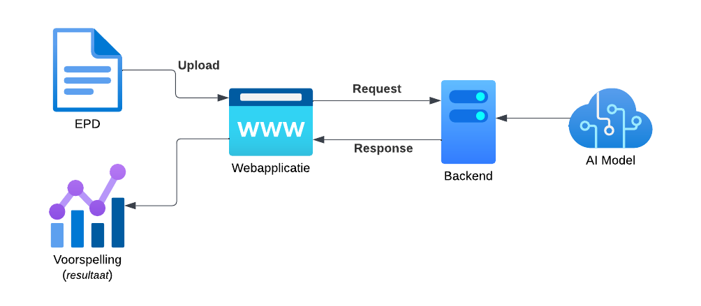
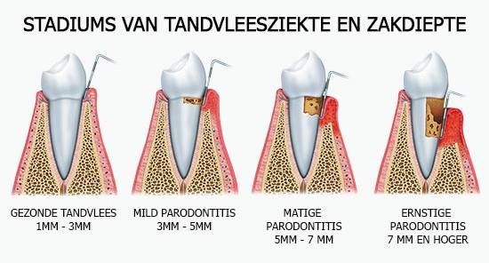

Voor de AI Minor binnen Avans in het schooljaar 2022-2023 is er een samenwerking geweest met PhD onderzoek bij InHolland. Deze opdracht is door Laura Swinckels en Ander de Keijzer samengesteld. Het onderwerp van het PhD onderzoek is het vroegtijdig detecteren van de mondaandoening Parodontitis. Dit project is een begin van het realiseren van een AI die dit zou kunnen.
Probleemstelling
Het inschatten van een risico op het krijgen van een mondaandoening, zoals een gaatje of tandvleesontsteking (parodontitis), is een van de belangrijkste taken van de tandarts en mondhygiënist. Veel mondaandoeningen hebben een procesmatig karakter en zijn gebaat bij vroegsignalering. Parodontitis is bijvoorbeeld een tandvleesaandoening waarbij langdurig ontstoken tandvlees kan leiden tot tandverlies. Met vroegtijdige preventie is dit echter een goed behandelbare aandoening. Het risico op ontstaan en de ontwikkeling van veel mondaandoeningen wordt beïnvloed door een complexe interactie van genetische, biologische, leefstijl- en gedragsfactoren. Hoewel zorgverleners streven naar vroegsignalering blijft de patiënt afhankelijk van de kennis en ervaring van de mondzorgverlener (humane intelligentie). Als patiënten een groot risico lopen op een dergelijke mondaandoening worden er preventie interventies ingezet om dit te voorkómen, stabiliseren of de schade te beperken. De mondzorg is er dus bij gebaat om zo vroeg mogelijk een mondaandoening te detecteren.
Het vroegtijdig kunnen voorspellen van Parodontitis is erg lastig, omdat de mondaandoening door verschillende factoren kan ontstaan. Deze factoren die van invloed zijn zitten momenteel nog niet in de huidige data die op dit moment toegankelijk is. Hiervoor is de Big Mouth dataset benodigd. Doordat er gewerkt is met synthetische data, voor de tijdsduur van dit project, is er gekozen om de scope af te bakenen*. Het doel van dit project is om aan te tonen of een patiënt op het moment van een tandartsbezoek Parodontitis heeft.
*Deze afbakening heeft plaatsgevonden in overleg.Onze oplossing
Onze oplossing voor dit probleem is een getrainde AI die op basis van een elektronisch patiëntendossier (EPD) kan zeggen of deze persoon parodontitis heeft of niet. Dit dossier bevat informatie over een patiënt zijn tandartsgeschiedenis met daarbij ook persoonsgegevens zoals: geslacht, leeftijd en informatie van de mond van dat moment. Hiervoor is een website gemaakt om het proces van het uploaden van de EPD en het inzien van het resultaat gebruiksvriendelijk te maken. De flow van de applicatie is hieronder te zien. 
In de video hieronder wordt een demonstratie van de webapplicatie gegeven waarin te zien is hoe de website werkt en hoe het resultaat van de AI eruit ziet.
Conclusie
Door middel van de video zou er een beter beeld moeten zijn geschetst van hoe de webapplicatie werkt. Echter speelt alles zich af op de achtergrond. Er heeft een analyse van de (synthetische) data plaatsgevonden waaruit een aantal bevindingen na voren zijn gekomen. De data laat zien dat verschillende eigenschappen elkaar op volgen, omdat er een verband is tussen de eigenschappen. De meeste leidende eigenschap die van invloed is op de diagnose Parodotitis is het aantal pockets. Naarmate de pocket dieper wordt volgen de andere eigenschappen ook met verergeren. Zie de afbeelding hieronder. 
Vervolgstappen
Tijdens het project was het probleem dat er geen indicatoren in de data zitten die bijdragen aan het vroegtijdig kunnen ontdekken van Parodontitis. Dit komt omdat er nog geen beschikking was over de Big Mouth dataset. Zodra deze in handen is zou er opnieuw een analyse moeten plaatsvinden op de data. Daarbij is het van belang om de eigenschappen te ontdekken die bijdragen aan het vroegtijdig kunnen ontdekken van Parodontitis.
Roadmap: als vervolgstappen op basis van de huidige opzet met de toevoeging van de Big Mouth dataset zouden als volgt kunnen zijn: het opnieuw analyseren van de data, het model aanpassen en opnieuw trainen. Verder zou de applicatie aangepast kunnen worden om deze wijzigingen te ondersteunen.